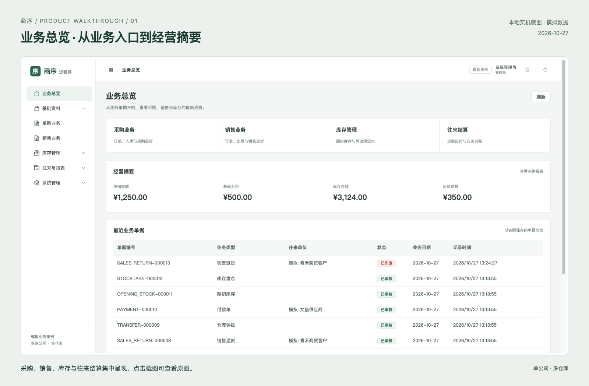
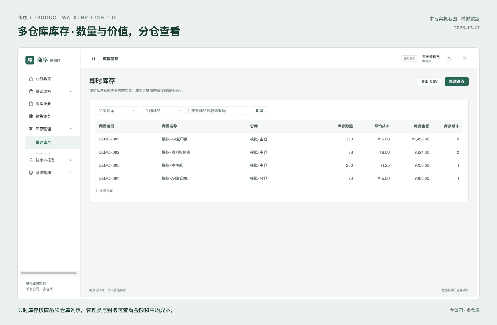
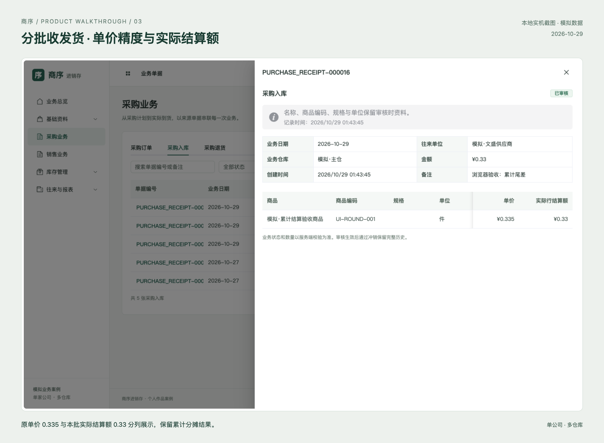
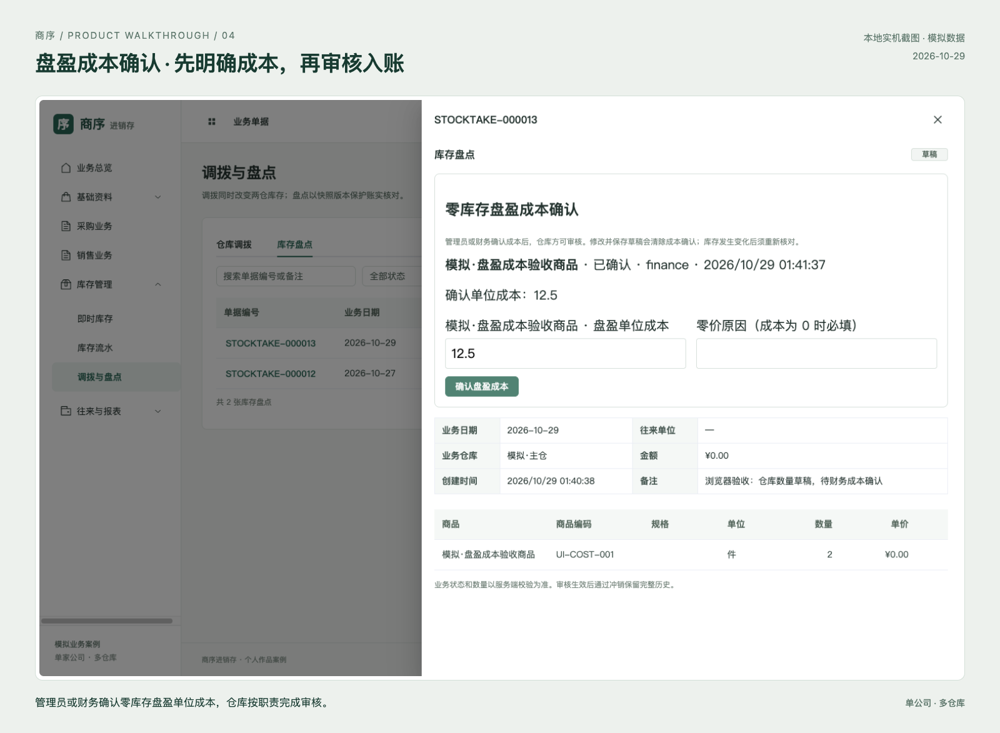
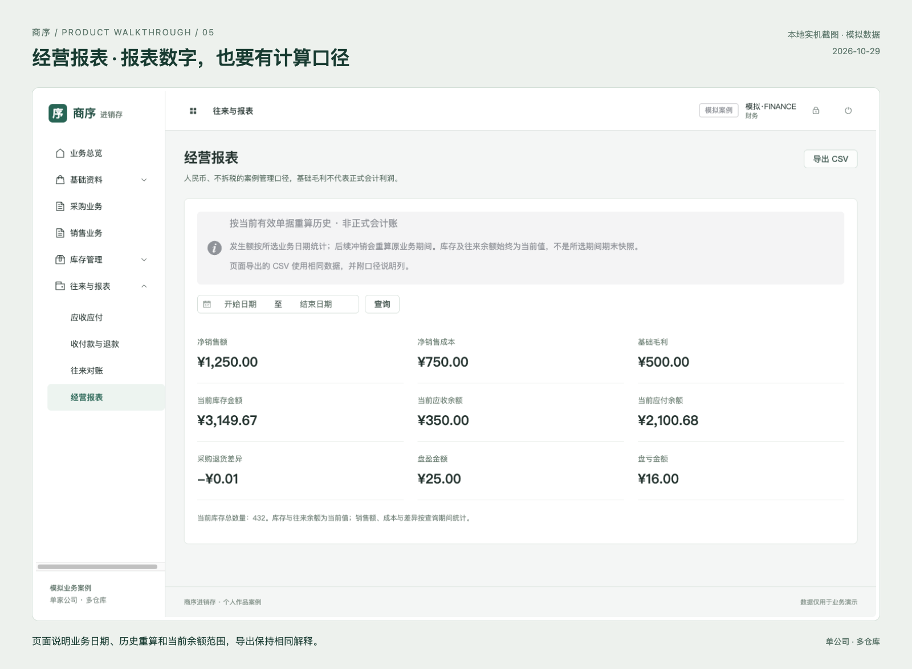
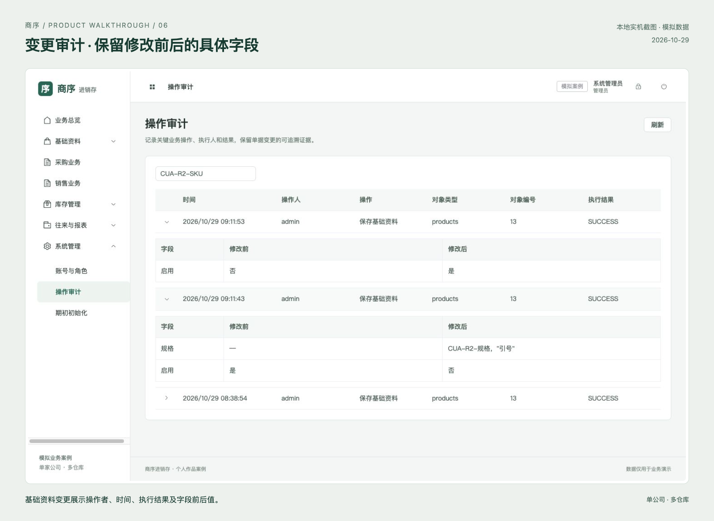

业务闭环
采购/销售订单关联分批收发货，执行后生成库存与应收应付记录，再通过结算、退货及退款核对余额。调拨、盘点与期初资料补齐库存管理。
商序 · 商贸进销存。围绕单据、库存与往来款，构建单公司、多仓库的完整业务流程。
Java 21 / Spring Boot / PostgreSQL / Vue 3 / TypeScript
业务动作关联来源单据，审核入账，冲销保留反向记录。
零库存盘盈先明确确认成本；服务端按角色限制操作与金额可见性。
从公开 API 和实际 CSV 下载，核对库存、流水与往来款。
采购/销售订单关联分批收发货，执行后生成库存与应收应付记录，再通过结算、退货及退款核对余额。调拨、盘点与期初资料补齐库存管理。
3 件 × 0.335 = 1.01。按累计执行量分摊为 0.34 / 0.33 / 0.34，退货沿用来源批次实际结算额。结算金额与高精度库存成本分开保存。
仓库录实盘数量；零库存盘盈由管理员或财务明确确认单位成本，零价须原因。确认后再审核，草稿修改或库存版本变化会使原基准失效。
审核时捕获名称、SKU、规格与单位快照；冲销保留原始和反向流水。旧资料回填明确标记，资料修改保留字段前后值。
业务写入在 PostgreSQL 事务中按单家公司串行处理，优先降低来源数量、库存和往来款同时变化的竞争复杂度；此设计有并行写入吞吐的取舍。查询不使用该写锁，首页只取最近 10 张匹配单据。
管理报表按当前有效单据重算历史；库存和往来余额是当前值，基础毛利不等于正式会计利润。
前后端通过 JSON HTTP API 通信，使用同源 Cookie 会话与 CSRF。后端按角色验证动作权限并对成本和商业金额脱敏，错误响应区分参数、登录、权限和业务冲突。
GET /api/documents
单据筛选及最近记录
POST /api/documents/{id}/approve
校验来源与状态后审核入账
GET /api/inventory
分仓库存数量与授权金额
GET /api/finance/statement
含期前余额的往来对账
GET /v3/api-docs
系统运行后，登录读取 OpenAPI 描述
另有 CSV 资料导入、报表导出和接口契约。当前没有外部系统连接器、机器令牌、Webhook 或第三方 SSO；具体集成需继续确定鉴权、字段映射和失败重试。
这些是实际系统的接口说明，当前静态站点不提供业务 API。






四项已发现界面缺陷已修复并回归；35 项具体功能中，31 项具备两种真实页面场景或操作方法证据。前端 22 项组件测试、隔离 API 16 项验收及 16 份 CSV 核对已有通过记录，各层范围详见报告。
当前为本地运行的自主开发案例，使用模拟数据。文件选择上传、实际改密与账号变更尚待操作验收；真实容器、云端和客户签收尚未完成。不同截图反映各自拍摄时状态。
后端深化版本另有 32 项真实 PostgreSQL 测试及隔离备份恢复记录；测试层次与版本分别统计。页面数字为模拟业务快照，未将这些结果宣传为客户经营收益。
回看实现方法 · 关于在线演示本站由 GitHub Pages 托管，任何人都可通过链接查看介绍和截图。完整系统的真实登录、单据操作及数据库持久化将在后续单独部署。
本地开发使用 Java 21、Node.js 22、PostgreSQL 和 Python 3；项目已有 Caddy / Compose 配置和原生恢复演练记录。真实容器与公网业务运行仍待验收。